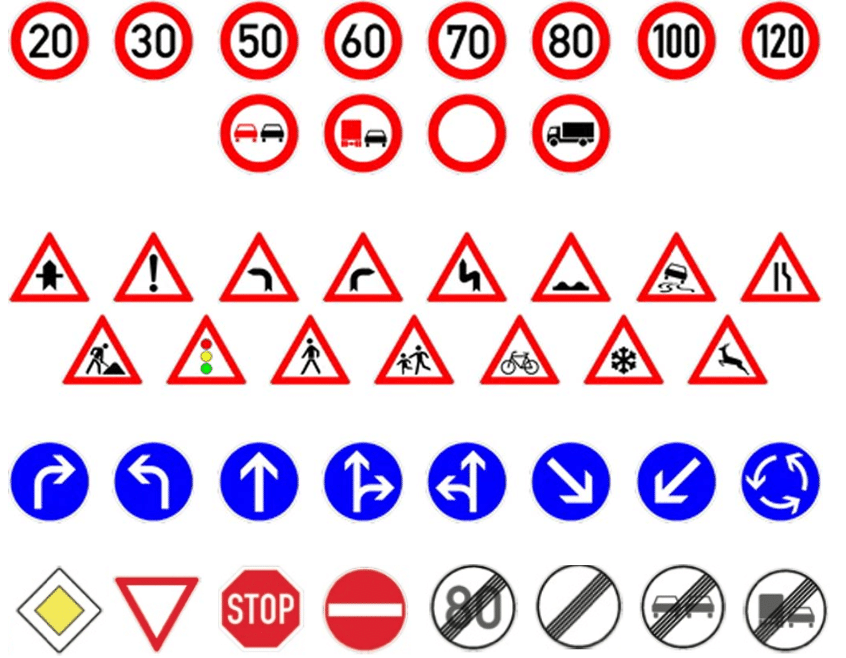
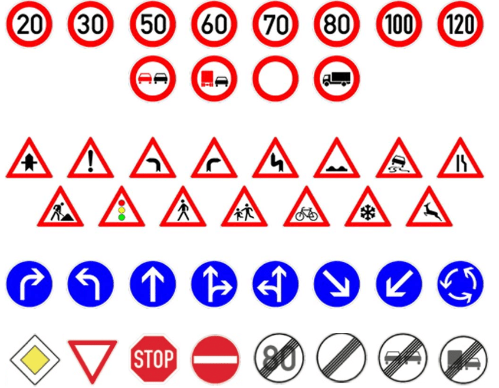

Test a Traffic Sign Classifier in your browser!
(click marker to change color)
Prediction will appear here.
Click on the image below to copy that traffic sign to the canvas, then click "Classify".
You can also draw on the picture.
 

You can also upload any image and then copy it to the canvas:
Made by Martin Szyld in 2023. I built this page as a first tensorflow.js project. For a bit of context and to see how this is working: see at GitHub